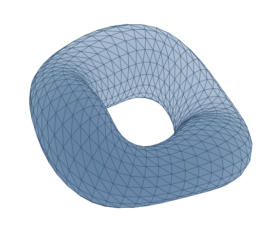
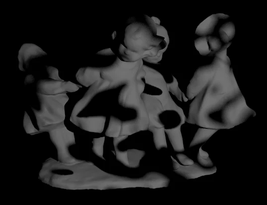
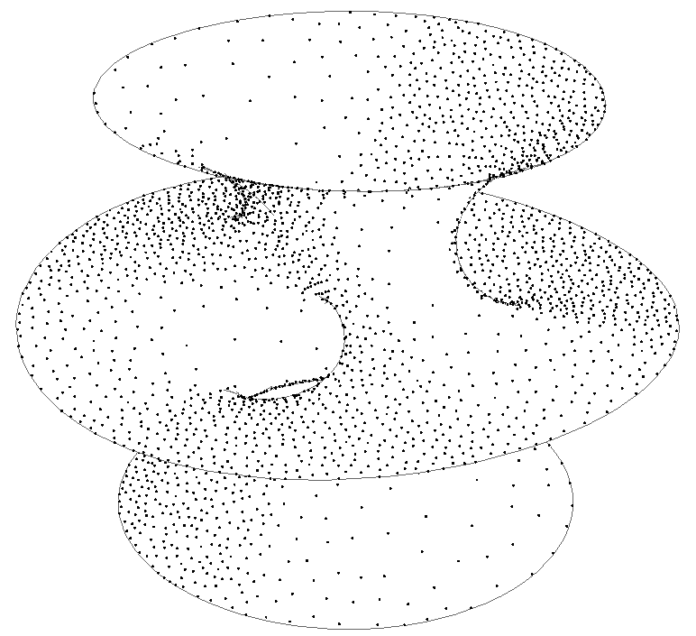
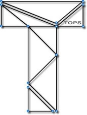
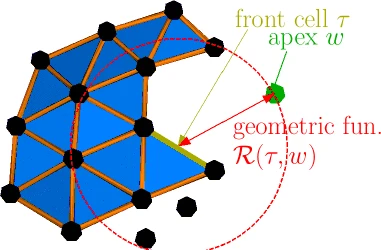

Geometry & topology
Surface representations, topological mesh operators, and the mathematical foundations of geometric modeling.
Understanding shape.
Building mathematical tools.
I am a mathematician working at the intersection of geometry processing, computational topology, and AI for mathematical reasoning.

Postdoctoral Researcher
NYU Tandon School of Engineering
Faculty Member
Federal University of Ceará · Brazil
01 / Research interests
Mathematical foundations and computational methods for representing, understanding, and reasoning.
Surface representations, topological mesh operators, and the mathematical foundations of geometric modeling.
Blue noise sampling, surface reconstruction, and structured light methods that connect digital geometry to the physical world.
Tools for comparing and interpreting AI-generated mathematical proofs, with a focus on their argument structure.
02 / Publications
NeurIPS Workshop on AI for Verifiable Coding (VeriCodeGen) · Workshop paper
Ciência Florestal · 31(4), 1885–1909
SIBGRAPI · Workshop of Work in Progress
IEEE Transactions on Visualization and Computer Graphics · 24(6), 1983–1996

Computer Graphics Forum · 33(7), 71–80 · Pacific Graphics

Graphical Models · 76(1), 17–29

JP Journal of Geometry and Topology · 11(1), 65–76

Computer Aided Geometric Design · 27(1), 1–22

International Journal of Shape Modeling · 15(1–2), 77–91

Computer Graphics Forum · 25(4), 685–695

SIBGRAPI · Natal, Brazil


RITA — Revista de Informática Teórica e Aplicada
03 / Projects & software
Research tools, source code, and experiments to explore and build upon.
A synthetic scanner built with physically based rendering to evaluate structured light methods under challenging scene conditions.
Hierarchical Poisson disk sampling on polygonal surfaces, with adaptive distributions and applications to surface stippling.
A C++ library for constructing and editing triangulated 2-manifolds.
Auditable comparisons of the argument structure in AI-generated proofs.
04 / Background
My work connects the mathematics of shape with the algorithms that make it useful.
I am a faculty member at the Federal University of Ceará (UFC), Brazil, and a postdoctoral researcher at NYU Tandon School of Engineering, working with Prof. Claudio Silva.
I received my MSc and DSc in Applied Mathematics at IMPA / VISGRAF, under the supervision of Luiz Velho, with Hélio Lopes as my doctoral co-advisor. My research spans geometric modeling, computational topology, sampling theory, discrete differential geometry, and 3D photography.
Archived notes and exercises in discrete mathematics and computer graphics.